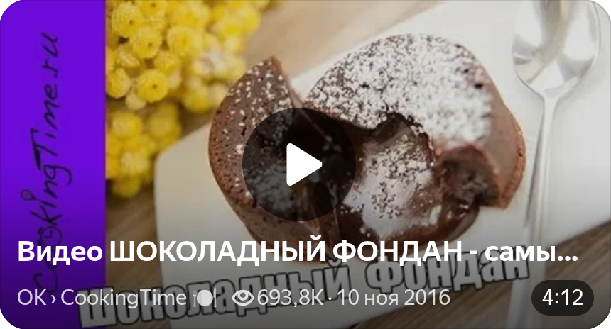

Шоколадный фондан
Назад

Рецепт
Ингредиенты
- Горький шоколад (60–72% какао) — 100 г
- Сливочное масло — 50 г
- Яйца — 2 шт.
- Сахар — 3 ст. л.
- Пшеничная мука цельнозерновая — 2 ст. л.
- Какао-порошок — для посыпки формочек
Пошаговый рецепт
- Шоколад поломать на кусочки и растопить вместе со сливочным маслом на водяной бане или в микроволновке на маленькой мощности, часто перемешивая. Важно не перегреть, чтобы масса не расслоилась.
- Духовку разогреть до 210 °C.
- Яйца перемешать с сахаром венчиком или вилкой до однородности, не взбивая в пену.
- Соединить яйца с шоколадной массой, всыпать муку и ещё раз хорошо размешать.
- Формочки для маффинов или кокотницы смазать маслом и присыпать какао.
- Разлить тесто по формочкам, заполнив их примерно на ¾, так как при выпекании десерт поднимется.
- Выпекать около 10 минут. Готовность определяется так: края схватились, а серединка ещё слегка дрожит или даже немного проваливается.
- Сразу вынуть из духовки, дать чуть остыть и аккуратно перевернуть формочки на тарелку.

Подача
Шоколадный фондан — это десерт-сюрприз, который создаёт яркий контраст текстур. Главное — не передержать в духовке и подать его сразу после приготовления.
Попробуйте, и вы убедитесь, что это действительно просто и очень вкусно!